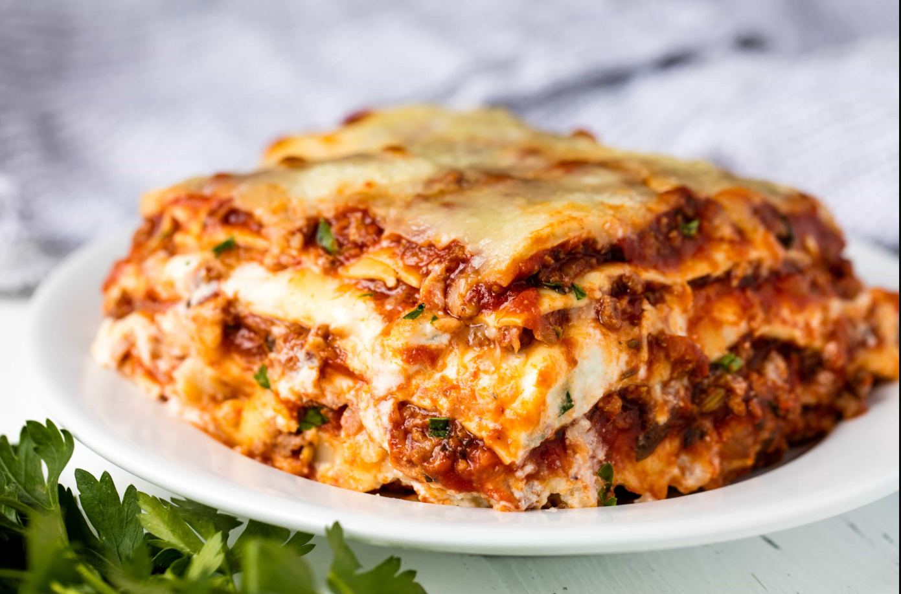

Home
Lasagna

This meaty cowboy lasagna, inspired by Trisha Yearwood's recipe, can serve
a crowd of cowboys. Pasta sheets are layered with cheese, ground beef,
pepperoni, and sausage. Jalapenos bring the heat.
1 tablespoon olive oil
1 pound ground sirloin
1 pound sage-flavored pork
2 jalapeno peppers
1 onion
3
cloves garlic, minced
8 ounces pepperoni, roughly chopped
1 (15 ounce) can
fire roasted diced tomatoes
1 (12-ounce) can tomato paste
1 teaspoon dried
oregano
2 cups water
salt and freshly ground black pepper to taste
1 pound
lasagna noodles
16 ounces ricotta cheese
16 ounces mozzarella
cheese
2/3 cup grated Parmesan cheese